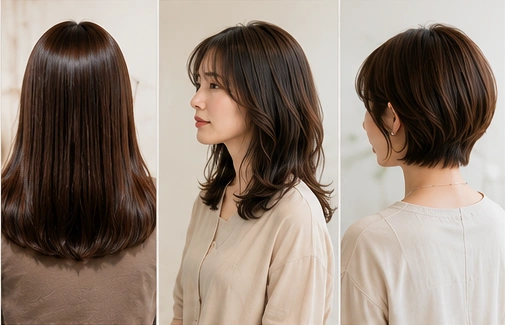

01
傷ませたくない
髪や頭皮への負担が気になること自体を、相談の入口に。
girasol / Yokohama
傷ませたくない。白髪やうねり、広がりも気になる。そんな迷いを、髪と頭皮の状態を見ながら整理していく相談型の美容室。
Consultation First
girasolの口コミでは、髪や頭皮の状態を見ながら進める対応や、流れ作業ではない丁寧さが繰り返し評価されています。
※掲載ビジュアルはAI生成のイメージです。実際の施術例・スタッフ・お客様の写真ではありません。
01
髪や頭皮への負担が気になること自体を、相談の入口に。
02
見た目だけでなく、毎日の扱いやすさまで含めて方向を考える。
03
カラーやケアを目的化せず、今の状態に合う選択肢として整理する。
Customer Voice
口コミ原文を転載せず、確認できた評価傾向だけを整理しています。

※掲載ビジュアルはAI生成のイメージです。実際の施術例・スタッフ・お客様の写真ではありません。
髪と頭皮への配慮
施術前の状態確認や薬剤刺激への確認など、状態を見ながら進める点が評価されています。
扱いやすさ
うねりや広がり、手触りなどについて、日常の手入れが楽になったという体験が確認されています。
相談の丁寧さ
一人ひとりの髪の状態を考えたヒアリングや施術が安心につながっているという声があります。
継続来店
技術への信頼に加え、スタッフの温かさや居心地を理由に継続利用する声が見られます。
Store Information
Before Consultation
来店前に、自分が気になっていることや優先したいことを整理できる入口を準備しています。